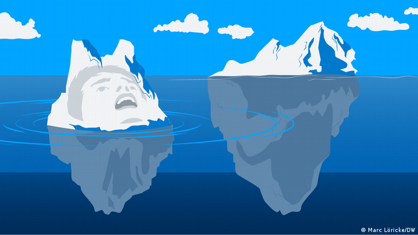
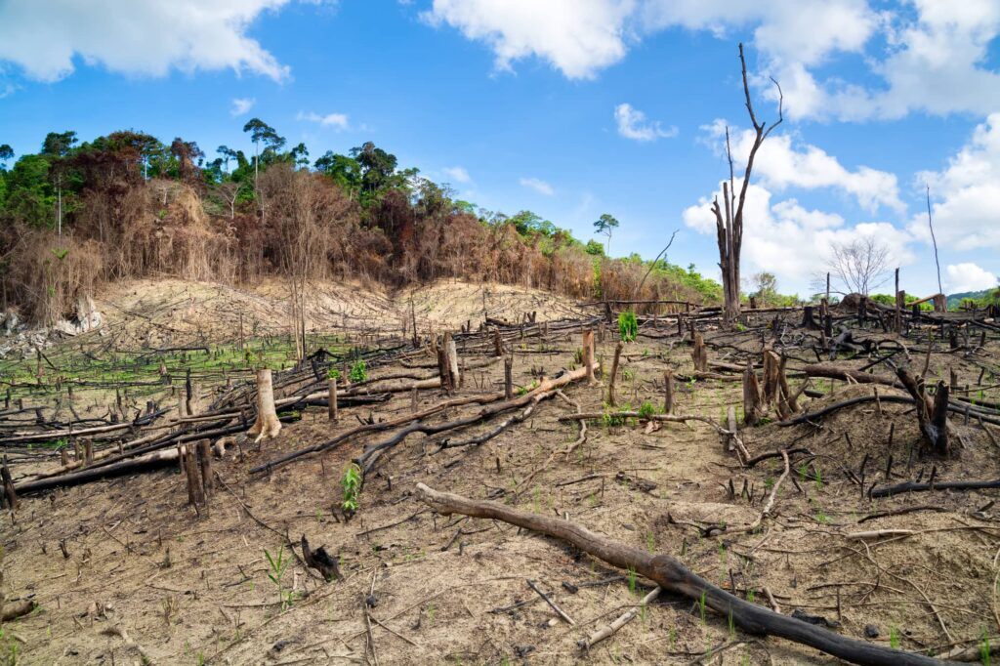
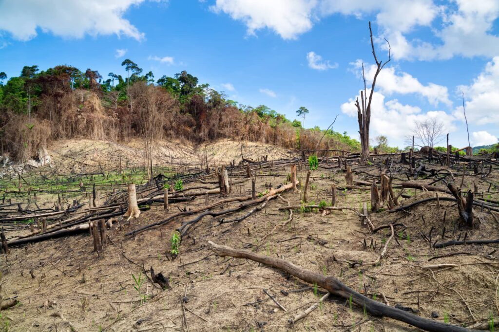

Nuestro planeta y una batalla contra el tiempo.
La contaminación, la explotación insostenible de recursos naturales, la deforestación, la sobreexplotación de los océanos y su conversión en vertederos, la plastificación y el envenenamiento del medio ambiente; todo ello ha contribuido a la emergencia climática y a la crisis que amenaza con ser una auténtica catástrofe para la vida, incluyendo la humana, y no hemos querido verlo hasta que la Tierra nos ha avisado con claros síntomas de extenuación. Y hay un claro y único culpable: la codicia humana, la economía, el capitalismo salvaje; en una palabra: el dinero.
Calentamiento global.
La Tierra ya se ha calentado y enfriado muchas veces de forma natural, pero lo cierto es, que estos ciclos siempre habían sido mucho más lentos, necesitando millones de años, mientras que ahora y como consecuencia de la actividad humana.
El calentamiento global es un fenómeno que afecta a todos los seres vivos de nuestro planeta y cuyas consecuencias pueden ser desastrosas. Consiste en el aumento de la temperatura del sistema climático de La Tierra a largo plazo. Es la consecuencia más preocupante del cambio climático a la que nos enfrentamos.
Como consecuencia de ese aumento de temperatura, los glaciares se están derritiendo, aumentando así el nivel del mar. Así mismo, las selvas y los grandes bosques se están secando, acabando con la vida vegetal y con gran parte de la biodiversidad de nuestros ecosistemas. La desertificación acecha cada vez más.
Como ayudamos a cuidar el planeta?
Ahorrar agua.
Mantén cerrada la llave mientras no necesites el agua y siempre que puedas reutilízala. Si vas a regar tus plantas hazlo muy de mañana o por las tardes para que no se evapore tan rápido el agua.
Ahorra energia electrica.
En casa puedes tomar las siguientes acciones:
Apaga las luces que no utilices y desconecta los aparatos eléctricos.
Cambia los focos de bombilla por focos ahorradores.
El refrigerador es el aparato que más energía consume en tu casa, para mantener su consumo al mínimo procura mantenerlo en entre 3 y 5 grados, el congelador entre -17 y -15 grados, y mantenlo lejos de las fuentes de calor (como la estufa).

 
